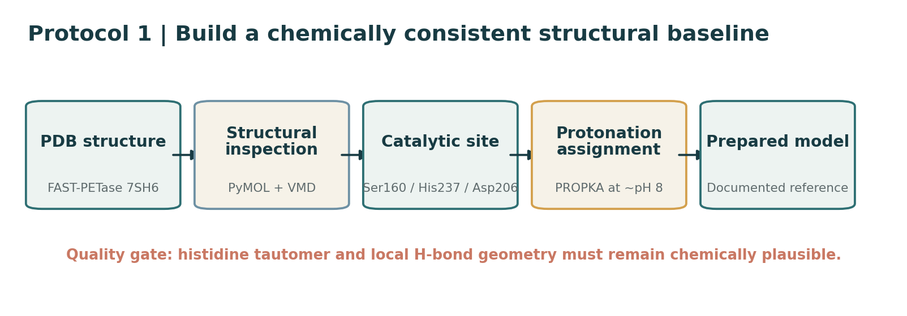
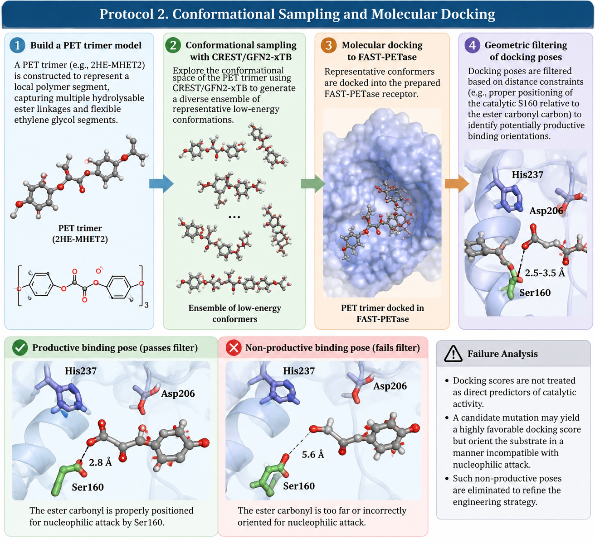
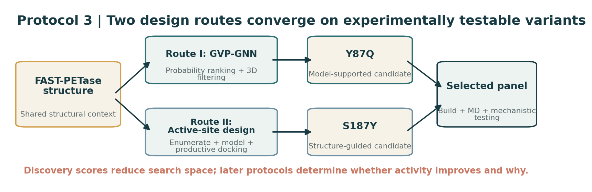
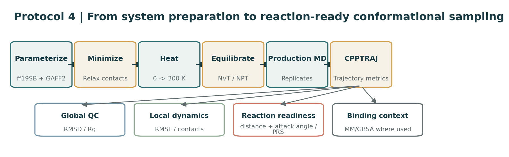
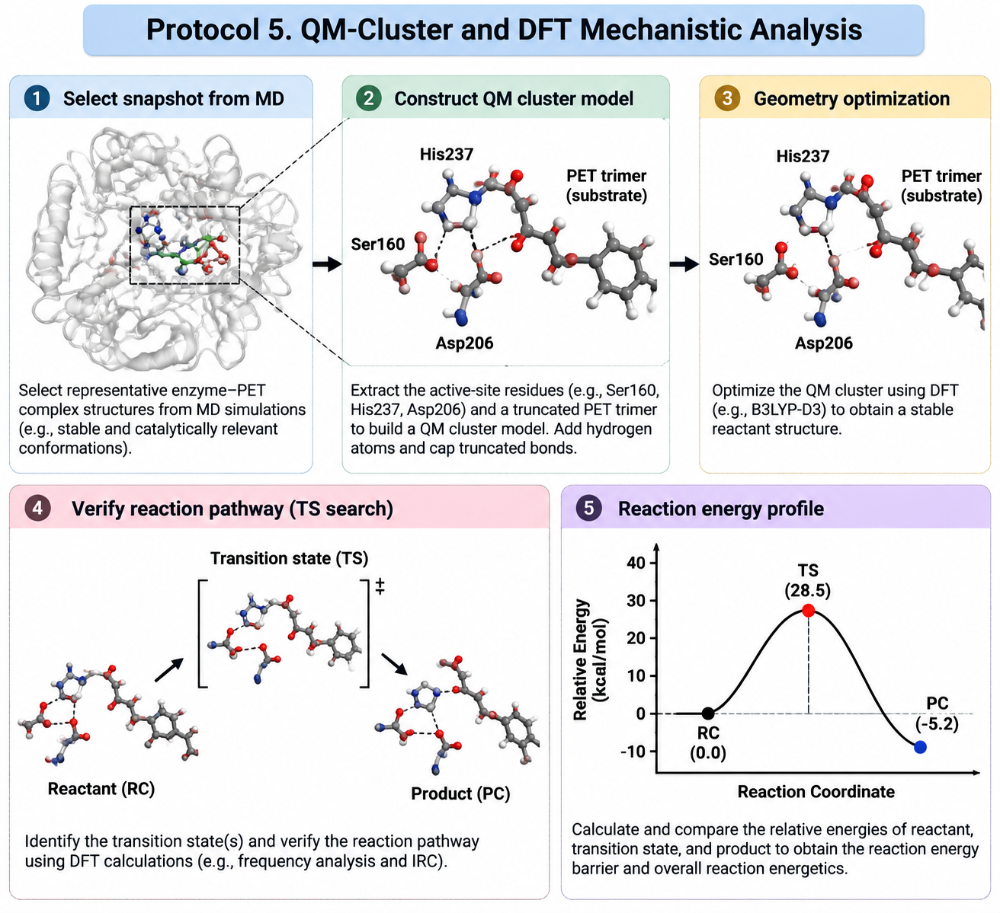
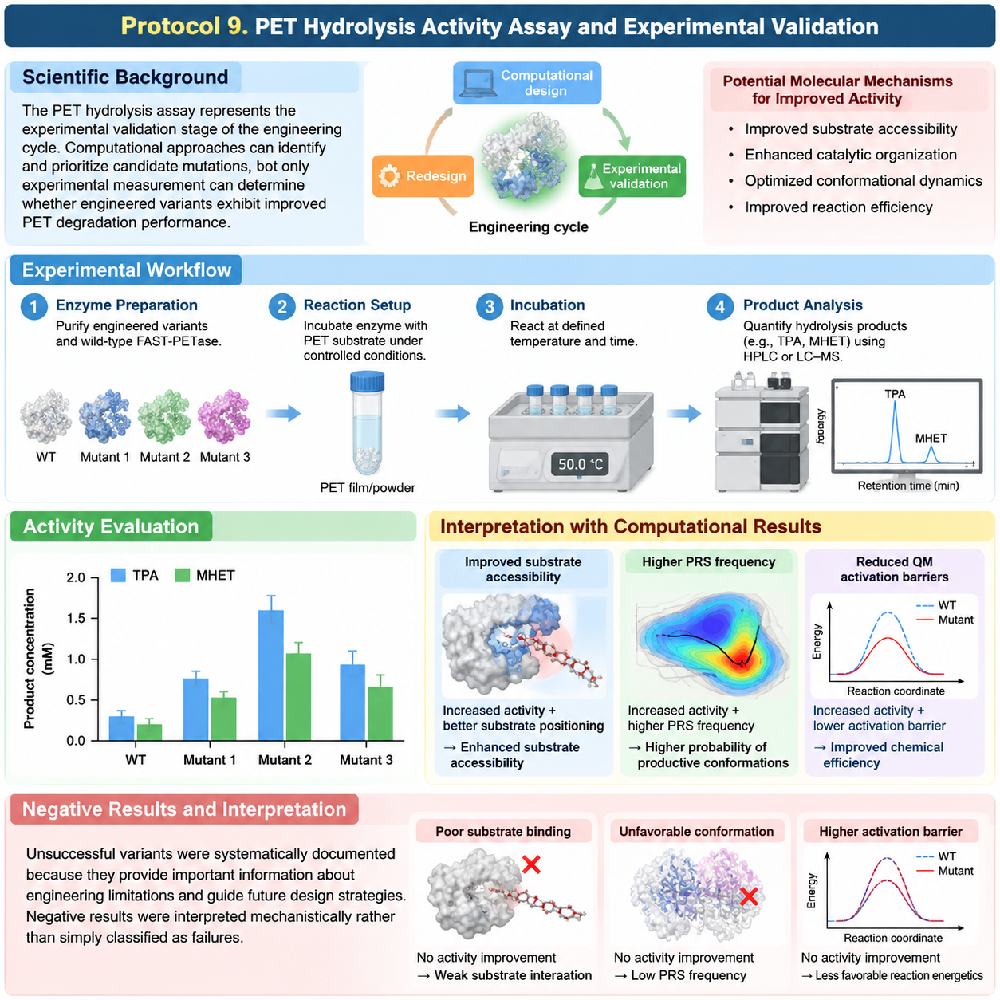

Bottleneck-Guided Engineering of PET Hydrolases
This protocol outlines a detailed and reproducible workflow for bottleneck-guided engineering of PET hydrolases, incorporating computational design, molecular simulation, quantum-mechanical analysis, and experimental validation. This workflow is designed to uncover the molecular mechanisms responsible for functional improvement, not just to identify mutations with enhanced PET-hydrolysis activity.
Each protocol section is structured around a specific biological or physicochemical question and describes the rationale behind the choice of a method, the expected outcomes, the possible limitations and the specific role of the method in the overall engineering cycle. The complete workflow incorporates mutation discovery, structural interpretation, laboratory construction and functional assessment in an iterative Design-Build-Test-Learn (DBTL) cycle. Computational approaches are used to rank physically plausible variants and identify potential catalytic bottlenecks, and experimental assays provide functional validation and inform subsequent engineering choices. This integrated strategy converts individual experimental records and computational analyses into a traceable scientific narrative for iDEC evaluation and future reproducible PET-hydrolase engineering efforts.
The DBTL Feedback Loop
The stages correspond to a different phase in the engineering cycle during which computational prediction, experimental construction, functional evaluation and mechanistic interpretation are connected by a continuous feedback loop: Design -> Engineering -> Protocols -> Results -> Diagnosis -> Redesign.
Design: Defines the biological hypothesis and possible engineering targets. It connects to mutation candidate generation and structural preparation and explains how candidate variants are selected based on structural contexts.
Engineering: In silico candidate prioritisation is connected with mutant construction, allowing computationally predicted variants to be converted into physically testable enzymes.
Diagnosis & Redesign: Successful and unsuccessful variants are interpreted to identify the specific molecular bottleneck that is affected. Negative results are not seen as individual failures, but as useful limitations that contribute to the development of future mutation strategies.
Protocol 1. Structural Preparation and Visualization
Scientific Background
An experimentally determined or computationally predicted protein structure represents only a single snapshot within the highly dynamic conformational landscape of an enzyme. Before performing downstream computational analyses, including molecular dynamics (MD) simulations and quantum mechanical (QM) calculations, a chemically and structurally reliable starting model must be established.
Accurate structural preparation is particularly important for PET hydrolases because catalytic activity depends on the precise organization of the active-site architecture, including substrate positioning, hydrogen-bond networks, and proton-transfer pathways. Incorrect assignment of protonation states, especially for catalytic residues, may distort electrostatic interactions, alter local conformational preferences, and introduce artificial catalytic geometries.
Therefore, this protocol establishes a reproducible structural baseline for subsequent computational investigation of PET hydrolysis mechanisms.
Procedure
Structural retrieval and active-site inspection: Experimentally resolved PET-hydrolase structures, such as PDB 7SH6 for FAST-PETase, are retrieved and inspected using PyMOL. Structural analysis is performed to identify the overall alpha/beta-hydrolase fold, catalytic triad (Ser160-His237-Asp206), substrate-binding region, and key residues involved in PET recognition.
Molecular visualization and trajectory analysis preparation: VMD is introduced as a complementary visualization platform for handling large molecular systems and analyzing conformational changes during molecular dynamics simulations. This establishes a consistent workflow for connecting static structural inspection with dynamic molecular behavior.
Protonation-state assignment: Residue pKa values are estimated using PROPKA under conditions corresponding to approximately pH 8.0, consistent with the intended PET hydrolysis environment.
The protonation state and tautomeric configuration of the catalytic histidine (His237) are carefully evaluated through both computational prediction and three-dimensional structural inspection. The final assignment is manually verified to ensure chemically reasonable hydrogen-bond donor/acceptor patterns and a suitable proton-transfer network within the catalytic center.
Failure Analysis: If incorrect protonation states or histidine tautomers are assigned, artificial structural geometries and unfavorable local interactions may be introduced. Such errors propagate through subsequent simulations, invalidating later mechanistic conclusions.

Readouts and decision criteria: Proceed only when the catalytic residues, binding cleft, and modeled mutation sites are structurally intact and no major local clashes remain. Treat PROPKA as decision support rather than an automatic assignment; three-dimensional inspection is the final quality-control step. The output of this protocol is the common receptor/reference model used in PET conformer docking and subsequent simulation.
Protocol 2. Conformational Sampling and Molecular Docking
Scientific Background: PET is a semi-crystalline solid polymer and a highly flexible substrate, unlike conventional rigid small-molecule ligands. Using a single manually constructed ligand geometry introduces substantial bias, as the docking outcome becomes overly dependent on the initial arbitrary fold of the polymer chain.
Procedure: A PET trimer model, such as 2HE-MHET2, is constructed to represent a local polymer segment, capturing multiple hydrolysable ester linkages and flexible ethylene glycol segments.
The conformational space of the PET trimer is explored using CREST/GFN2-xTB to generate a diverse ensemble of representative low-energy conformations. These representative conformers are docked into the prepared FAST-PETase receptor.
Docking poses are subjected to geometric filtering based on distance constraints, such as proper positioning of the catalytic S160 relative to the ester carbonyl carbon, to identify potentially productive binding orientations.
Failure Analysis: Docking scores are not treated as direct predictors of catalytic activity. A candidate mutation may yield a highly favorable docking score but orient the substrate in a manner incompatible with nucleophilic attack. Such non-productive poses are eliminated to refine the engineering strategy.

Protocol 3. Candidate Generation Strategies
Scientific Background: PET-hydrolase engineering is a multidimensional optimization problem. To effectively navigate the vast mutational space, computational algorithms are required to enrich the pool of testable variants with structurally and chemically plausible candidates before physical construction.
Procedure: Two complementary routes are employed.
Route I (Graph-Learning-Guided Design): A structure-aware Geometric Vector Perceptron Graph Neural Network (GVP-GNN) explores the 3D protein environment to evaluate amino acid compatibility. Substitutions are ranked by probability and subsequently filtered based on their proximity to the catalytic pocket or bound substrate, leading to candidates like Y87Q.
Route II (Structure-Based Active-Site Design): Substitutions surrounding the PET-binding region are explicitly and systematically enumerated. Candidate structures are modeled, filtered for structural plausibility, and evaluated via catalytic-geometry-aware docking, leading to candidates like S187Y.
Failure Analysis: Candidate generation tools do not encode the entire catalytic process. A mutation rejected during structural modeling, due to severe steric overlap or unrealistic packing, indicates a failure of the sequence to form a physically reasonable local structure.

Protocol 4. Molecular Dynamics Simulation and Trajectory Analysis
Scientific Background: Productive hydrolysis of PET requires correct substrate positioning, organization of catalytic residues, and conformational flexibility to adopt geometries compatible with the reaction. MD simulations provide a connection between engineered mutations and changes in molecular behaviour, offering insights into structural stability and access to geometric pre-reaction states (PRS).
Procedure
The enzyme-PET complex is parameterised with ff19SB for the protein and GAFF2/RESP charges for the ligand, then solvated in a TIP3P water box with counterions.
The staged AMBER workflow is performed as follows: energy minimisation, gradual heating from 0 to 300 K, NVT/NPT equilibration, and production MD.
Quantifiable descriptors, including RMSD, radius of gyration, and RMSF, are extracted from trajectories with CPPTRAJ to represent global stability and local flexibility.
Mechanistic analysis studies the sampling frequency of catalytically competent geometric pre-reaction states in terms of nucleophile-electrophile distances and attack angles. Relative non-covalent binding energetics are estimated using MM/GBSA calculations.
Parameters and Analysis of Data
MD trajectories were analysed hierarchically from global structural properties down to reaction-relevant molecular features.
Structural Stability: Overall structural changes throughout the simulation were analysed by root mean square deviation (RMSD). Stable RMSD profiles indicate that the simulated enzyme exists in a consistent conformational ensemble after relaxation.
Local Flexibility and Dynamic Behaviour: Root mean square fluctuation (RMSF) was calculated to pinpoint residue-level changes in flexibility caused by mutations. Specifically, regions near the PET-binding pocket and catalytic residues were examined, where alterations in dynamics might affect substrate processing.
Global Compactness: Changes in overall protein compactness were evaluated using the radius of gyration (Rg). This analysis helps determine whether mutations cause significant structural expansion or compaction that may affect enzyme architecture.
Stability of Enzyme-Substrate Interactions: To assess the stability of the interaction between PET-derived substrates and surrounding residues, substrate contacts with the enzyme were analysed. Stable substrate interactions may suggest better substrate accommodation, although overstabilization may also indicate nonproductive binding.
Catalytic Geometry and Reaction Readiness: Besides traditional stability metrics, reaction-relevant geometric parameters were characterised to determine whether the enzyme routinely accesses catalytically competent configurations. These analyses link molecular motion to catalytic function by evaluating not simply whether the enzyme is stable but whether it can organize the substrate and catalytic residues into productive states.
Failure Analysis
Negative computational results were considered informative because they indicate which engineering hypotheses are not sufficient. A mutation may retain global structural stability but fail to improve catalytic geometry or substrate positioning. This suggests that increased stability does not necessarily imply improved PET hydrolysis.
Instead of discarding the mutation based only on performance, mechanistic analysis can be used to improve the engineering strategy. If a variant folds stably but is not very reactive, future redesign attempts might focus on improved substrate orientation, active-site flexibility, proton-transfer organization or transition-state stabilisation.
Thus, MD analysis is not only useful for identifying promising variants but also as a diagnostic tool for molecular bottlenecks that steer the next engineering cycle.

Protocol 5. QM-Cluster and DFT Mechanistic Analysis
Molecular dynamics simulation can give insight into protein motion, conformational flexibility and substrate accessibility, but cannot accurately account for the electronic rearrangements that happen during chemical bond formation and cleavage. To examine the chemical basis of PET hydrolysis, QM-cluster calculations were introduced to model the catalytic reaction at the electronic level.
QM analysis provides a quantum mechanical treatment of the reactive region, allowing assessment of reaction energetics, transition-state stabilisation, and mutation-dependent alterations in catalytic organization.
For PET hydrolases, increased activity is not always correlated with large structural changes. Instead, mutations can improve catalysis by subtly altering active-site geometry, electrostatic interactions, proton-transfer networks, or by stabilising reaction intermediates.
Thus, QM analysis provides the last mechanistic layer of the engineering workflow, linking mutation-induced structural changes to experimentally observed differences in PET hydrolysis performance.
QM area: The QM region consists of catalytic triad residues, the PET reactive moiety, directly involved hydrogen-bonding residues, and key electrostatic interaction partners. A molecular mechanics representation preserves the structural context of the residual protein environment.
Mechanistic Explanation
QM analysis is not used only to calculate activation energies. Instead, it provides a mechanistic connection between engineered mutations, structural rearrangements and chemical catalysis.
Changes in calculated reaction barriers, intermediate stability, hydrogen-bond networks or catalytic geometries can provide insight into the effect of mutations on particular stages of PET hydrolysis. For instance, enhanced transition-state stabilisation can explain diminished activation energy.
Improved reaction geometry may reflect better organization of catalytic residues. Altered interaction patterns may lead to altered substrate activation or stabilisation of intermediates. The bridge between QM results and MD/PRS analysis allows computational predictions to be translated from structural observations to experimentally testable mechanistic explanations.
Analysis of Failure: Variability between QM calculations from different conformational states does not necessarily imply computational inconsistency or experimental error. Enzymes are dynamic conformational ensembles rather than single rigid structures. MD-derived snapshots may correspond to different catalytic states with different readiness for reaction. The results suggest that interpretation of QM calculations should be based on multiple representative conformations rather than a single optimised structure.
If only a subset of conformations has improved catalytic energetics, this might suggest that the mutation increases the probability of accessing productive states rather than altering the catalytic mechanism broadly. These results can guide future redesign, indicating whether the current engineering strategy should aim at stabilizing the transition state, positioning the substrate, or preorganizing the active site.

Protocol 6. Electronic Structure and Noncovalent Interaction Analysis
Scientific Background: To properly understand why a mutation changes an activation barrier, one needs to translate abstract electronic information into spatially resolved representations. Real-space wavefunction analyses shed light on the variation of noncovalent interactions throughout the molecular system during catalysis.
Procedure: Wavefunctions from Gaussian DFT optimisations are imported into Multiwfn. Interaction regions are defined from the Independent Gradient Model based on Hirshfeld partitioning (IGMH) and Quantum Theory of Atoms in Molecules (QTAIM). CYLview is used to visualise molecular geometries and electronic topologies.
These interactions are divided into attractive hydrogen bonding, van der Waals contacts and steric repulsion.
Failure Analysis: Conventional distance measurements in MD may not reflect the cooperative nature of weak interactions. IGMH may diagnose that a very small structural change introduces severe steric crowding or, in contrast, establishes a crucial stabilising network around the transition state.
Protocol 7. Recombinant Protein Expression and Purification
Scientific Background: Computational designs must be physically realized to determine whether predicted in silico improvements translate into measurable biochemical outcomes. Consistent culture and purification conditions are required so that functional differences can be attributed to the mutations rather than experimental variability.
Procedure: Sequence-verified plasmids, such as pET-22b(+) or TrxA-tagged pET-32a, are transformed into E. coli BL21(DE3). Expression is induced with 0.1 mM IPTG at 20°C for 24 h. Cells are lysed via sonication, and the soluble fraction is isolated.
Recombinant proteins are purified via Ni2+ immobilized metal affinity chromatography (IMAC). For pET-32a constructs, TEV protease digestion and a secondary nickel-affinity step are performed to remove fusion tags. Protein quality and purity are assessed via SDS-PAGE.
Failure Analysis: A mutant displaying highly favorable computational properties may fail to express efficiently or fold into a soluble protein. This highlights a manufacturability bottleneck, indicating that future candidate selection must balance catalytic potential with experimental feasibility.
Protocol 8. PET Hydrolysis Activity Assay and Experimental Validation
In the context of the scientific community, functional validation is vital for testing computational hypotheses. Better macroscopic PET degradation can arise from a variety of different molecular pathways, so absolute performance must be evaluated by differentiating between rapid screening proxies and accurate product quantification.
Steps to Take
Purified enzymes are treated with PET substrates under carefully monitored conditions. Bulk ultraviolet absorbance at 260 nm (A260) is assessed as a proxy for the accumulation of total soluble aromatic compounds in Tier 1 rapid screening.
Tier 2 (Precise Quantification): High-performing variants are put through chromatographic analysis (UPLC) with authentic standard curves to quantify specific products, including TPA, MHET, and BHET.
Failure Analysis: Although A260 accurately reproduces relative activity ranking, such as WT < TP < FP, it consistently overestimates absolute product concentrations by 16-52%. Relying entirely on A260 for absolute quantification is therefore an analytical-methodology failure. A mutation that improves predicted binding but exhibits unchanged experimental hydrolysis indicates that greater substrate retention without improved catalytic geometry is a dead-end engineering method.
Protocol 9. PET Hydrolysis Activity Assay and Experimental Validation
The experimental validation step of the engineering cycle is the PET hydrolysis assay. Computational methods can rationally identify and prioritise candidate mutations, but only experimental measurement can determine whether engineered variants exhibit improved PET degradation performance.
Increased catalytic activity for PET hydrolase engineering may be achieved by different molecular mechanisms, including higher substrate accessibility, improved catalytic organization, optimised conformational dynamics or improved reaction efficiency. Thus, experimental validation is not only required to rank the engineered variants, but also to verify whether the computationally predicted improvements result in measurable biochemical outcomes.
In this project, we utilised PET hydrolysis assays to compare engineered FAST-PETase variants to wildtype controls and provided feedback for subsequent mechanistic analysis and redesign. PET hydrolysis activity was determined by normalisation of product formation of the engineered variants to wild-type FAST-PETase. The interpretation of assay results was done in conjunction with computational predictions rather than as separate activity measurements. A successful variant should show enhanced PET degradation and a mechanistic rationale through integration with structural and computational studies.
For instance, improved substrate positioning and increased activity could indicate increased substrate accessibility. Higher activity together with better PRS frequencies may indicate a higher probability of reaching productive catalytic conformations. Increased activity and reduced activation barriers in QM may imply improved chemical efficiency.
Hence, experimental results constitute the final validation step, bridging molecular design principles with measurable enzyme performance.
Negative Results and Interpretation: Negative variants are systematically documented because they contain valuable information on engineering limitations and guide future design strategies. We did not simply label negative results as failures, but offered mechanistic interpretations.
